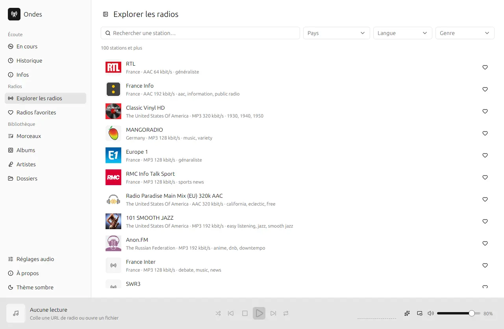
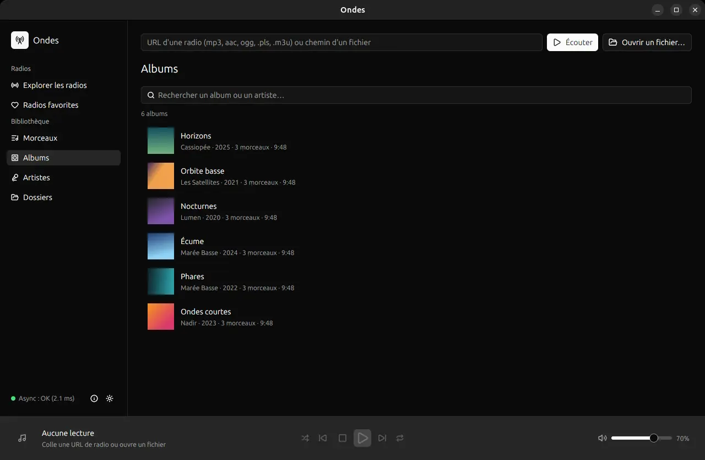
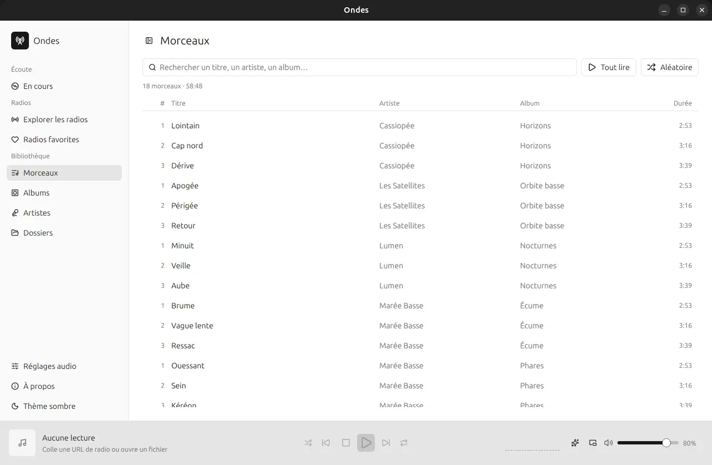

Des milliers de webradios
L'annuaire libre Radio Browser : recherche instantanée, filtres par pays, langue et genre, logos des stations.
Des milliers de webradios du monde entier et ta bibliothèque musicale, dans une application de bureau libre, rapide et légère.

Ondes réunit l'annuaire mondial des webradios et tes fichiers audio, avec une interface pensée pour le clavier.
L'annuaire libre Radio Browser : recherche instantanée, filtres par pays, langue et genre, logos des stations.
Garde tes stations préférées, ajoute un flux à la main ou importe une playlist .m3u / .pls. Le morceau diffusé s'affiche en direct.
Tes dossiers de musique indexés en arrière-plan : tags, pochettes, vues par morceaux, albums, artistes et dossiers. Les ajouts sont détectés tout seuls.
Tape quelques lettres : titres, artistes et albums sont filtrés à chaque frappe, sans tenir compte des accents ni des majuscules.
Une palette de commandes (Ctrl K) pour tout faire sans souris, et les touches multimédia du clavier qui pilotent la lecture.
Écrit en Rust avec GPUI, l'interface accélérée par le GPU de l'éditeur Zed. Code source ouvert, sous licence MIT ou Apache-2.0.


Choisis le paquet de ton système. Ondes te préviendra ensuite quand une nouvelle version sera disponible.
La version macOS n'a pas encore été testée. Toutes les versions sont sur la page des releases.
# Debian, Ubuntu : installer le paquet téléchargé sudo apt install ./ondes_*_amd64.deb # Autres distributions : rendre l'AppImage exécutable chmod +x ondes_*_x86_64.AppImage && ./ondes_*_x86_64.AppImage